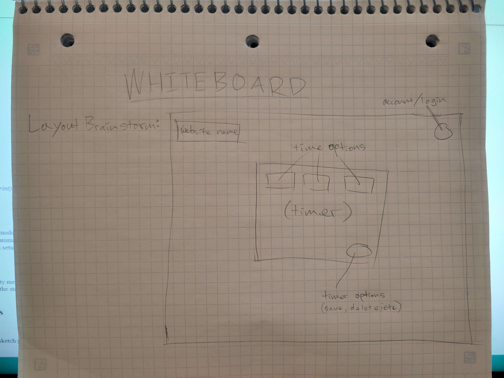
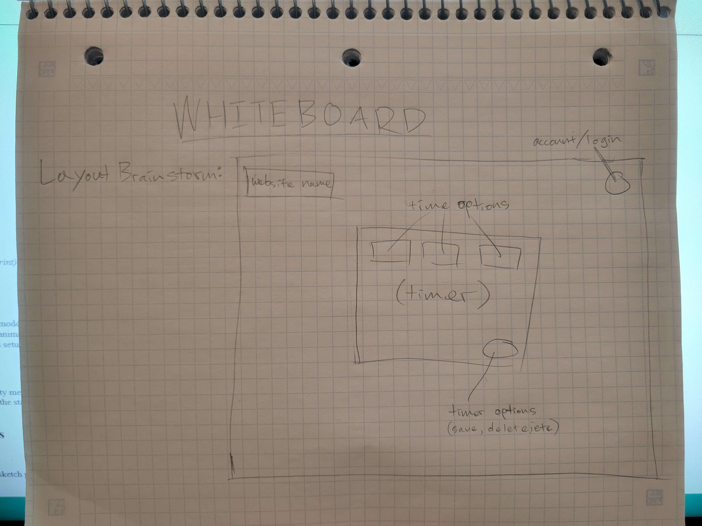

Attendance
- Alice Johnson – Team Lead
- Bob Lee – Developer
- Carla Nguyen – Designer
- Dan Smith – QA Engineer
Agenda
- Review goals of the Pomodoro Timer project
- Discuss initial features
- Explore potential UI/UX concepts
- Assign tasks for next steps
Unfinished Business
- Finalize core timer logic (carryover from previous sprint)
- Decide on database schema for task history
New Business
- Feature proposal: Ability to pause and resume Pomodoro sessions
- UI suggestion: Minimalistic interface with subtle animations
- Documentation: Start drafting API references and setup guide
Comments, Questions, Concerns
Alice: Can we include a dashboard for team productivity metrics?
Dan: Are we considering mobile responsiveness from the start?
Carla: We should explore color accessibility options.
Diagrams & Whiteboard Sketches
Images and diagrams presented during the meeting:
 

Meeting Recordings
Audio Recording:
Video Recording:
Extras
Click to view additional notes
Team voted unanimously to use a custom-built timer library instead of an open-source one due to flexibility concerns.